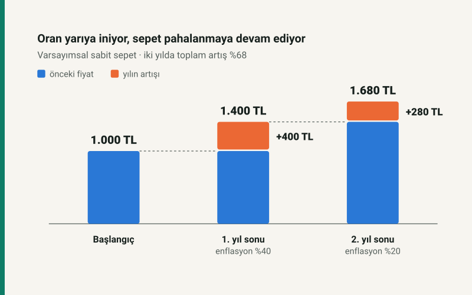

Düşen oran, düşen fiyat demek değildir
Enflasyon yavaşlarken alışveriş tutarınız artabilir. Çünkü enflasyon, fiyatların düzeyini değil, belirli bir süredeki değişimini ölçer. Hane bütçesi açısından belirleyici soru şudur: Geliriniz, sizin satın aldığınız mal ve hizmetlerin toplam maliyetinden daha hızlı mı artıyor?
Eylül 2026 itibarıyla veriler ne söylüyor?
TÜİK’in 3 Eylül 2026 tarihli Ağustos bülteninde yıllık tüketici enflasyonu %31,51, aylık artış %1,84 olarak açıklandı. TCMB’nin 17 Eylül tarihli toplantı özeti, yıllık oranın önceki aya göre 0,24 yüzde puan gerilediğini belirtiyor. Yıllık enflasyonun gerilemesi ile o ay fiyatların artması aynı anda gerçekleşmiş durumda. Kaynak: TÜİK, Ağustos 2026 TÜFE. Karşılaştırma: TCMB toplantı özeti.
Bu iki oran farklı sorulara cevap verir. Yıllık oran, Ağustos 2026’yı Ağustos 2025’le; aylık oran, Ağustos 2026’yı Temmuz 2026’yla karşılaştırır. “Bu ay fiyatlar %31,51 arttı” demek yanlış olur. Aynı şekilde %1,84’ü gelecek her ay için gerçekleşecekmiş gibi kullanmak da bir tahmini veri yerine koyar. Bu yazının veri kesim tarihi 22 Eylül 2026; henüz açıklanmamış eylül ayı gerçekleşmesine ilişkin bir iddia içermez.
1.000 TL’lik sepet üzerinden oran ve düzey
Fiyatı başlangıçta 1.000 TL olan değişmeyen bir sepet düşünün. Birinci yıl fiyatı %40 artarsa 1.400 TL olur. İkinci yıl enflasyon %20’ye düşerse yeni fiyat 1.680 TL’dir. Artış oranı yarıya inmiştir; fakat sepet ikinci yılda da 280 TL pahalanmıştır. İki yıllık toplam artış %60 değil, %68 olur: ikinci artış, ilk yılın sonunda yükselmiş olan tutara uygulanır.

Bu örnekteki yavaşlama dezenflasyondur. Fiyatlar genel düzeyinin düşmesi ise deflasyondur. Tek bir üründe indirim görülmesi, bütün ekonomide deflasyon yaşandığını göstermez. Benzer biçimde tek bir faturanın çok yükselmesi de genel endeksin aynı oranda arttığı anlamına gelmez. Kaynak: TCMB, Enflasyon ve Para Politikası.
Oran ile tutarı ayırmak günlük planlamayı kolaylaştırır. Tamamen temsili olarak, 50.000 TL’lik değişmeyen bir sepetin fiyatı bir ayda %1,84 artsa yeni maliyeti 50.920 TL olur. Bu işlem, ülke ortalamasını sizin bütçenize uygulayan bir senaryodur; her hanenin ağustos ayında tam 920 TL ek harcama yaptığını söylemez.
Baz etkisi: karşılaştırmanın diğer tarafı da değişir
Yıllık enflasyon (bu ayın endeksi / geçen yılın aynı ayının endeksi − 1) × 100 ile hesaplanır. Her yeni ayda hem güncel ay hem karşılaştırılan eski ay ilerler. Dolayısıyla yıllık orandaki hareketi anlamak için yalnızca bu ayın fiyat artışına bakmak yetmez.
Basitleştirilmiş bir endeks örneğinde geçen yıl temmuz 100, ağustos 105; bu yıl temmuz 140, ağustos 142,8 olsun. Temmuzdaki yıllık artış %40’tır. Ağustosta fiyatlar bir önceki aya göre %2 yükseldiği halde yıllık artış 142,8 / 105 − 1 hesabıyla %36’ya iner. Karşılaştırmadan geçen yılın %5’lik aylık artışı çıkar, yerine %2’lik artış girer.
Bu örnek, yıllık düşüşün nasıl mümkün olduğunu gösterir; güncel verideki değişimin tamamını baz etkisine bağlayan bir çözümleme değildir. Bunun için aylık hareketleri, mevsimsel etkileri ve alt grupları birlikte incelemek gerekir. Tek bir ayın oranını on ikiyle çarpmak da yıllık gerçekleşmeyi vermez.
Aynı gelir artışı, üç farklı bütçe sonucu
Aylık net geliri 50.000 TL, düzenli tüketim gideri 40.000 TL olan temsili bir haneyi ele alalım. Başlangıçta ayda 10.000 TL kalıyor. Geliri %30 artarak 65.000 TL’ye yükselsin. Aynı miktar ve kalitedeki tüketim sepetinin maliyeti farklı oranlarda artarsa sonuç şöyle değişir:
| Sepetin fiyat artışı | Yeni gider | Ay sonunda kalan | Gelirin reel değişimi |
|---|---|---|---|
| %25 | 50.000 TL | 15.000 TL | +%4,00 |
| %35 | 54.000 TL | 11.000 TL | −%3,70 |
| %45 | 58.000 TL | 7.000 TL | −%10,34 |
Reel gelir değişimi (1 + gelir artışı) / (1 + sepet fiyat artışı) − 1 formülüyle bulunur. %30 gelir artışı ile %35 fiyat artışı arasındaki beş puanlık fark, tam reel kayıp değildir; doğru sonuç yaklaşık %3,70 kayıptır. Oranlar aynı dönemi kapsamalı, gelir de brüt yerine harcanabilir net tutarla ölçülmelidir.
İkinci satır özellikle öğreticidir: elde kalan para 10.000 TL’den 11.000 TL’ye çıkar; buna rağmen gelirin satın alma gücü azalır. Kalan 11.000 TL’nin eski fiyatlarla değeri 11.000 / 1,35 hesabıyla yaklaşık 8.148 TL’dir. Daha yüksek nominal bakiye, daha yüksek reel birikim anlamına gelmeyebilir. Tabloda borç taksiti, beklenmedik harcama ve yatırım getirisi yoktur; bunlar ayrıca eklenmelidir.
Kendi bütçenizde nasıl izleyebilirsiniz?
Önce harcama artışıyla fiyat artışını ayırın. Market ödemenizin %40 yükselmesi; aynı ürünlerin pahalanması, daha fazla ürün almanız veya ürün bileşiminin değişmesiyle oluşabilir. Karşılaştırılabilir bir ölçüm için ürün miktarını, ambalaj büyüklüğünü ve kaliteyi mümkün olduğunca sabit tutun. Daha az ürün alıp aynı tutarı ödediğinizde harcamanız sabit kalırken satın alma gücünüz azalmış olabilir.
İkinci olarak düzenli giderleri kira, gıda, ulaşım, faturalar ve diğer harcamalar şeklinde ayırın. Her grubun başlangıçtaki bütçe payını, aynı dönemde kendi kayıtlarınızdan hesapladığınız fiyat değişimiyle çarpıp toplayın. Bu, sabit sepet için basit bir kişisel fiyat göstergesi oluşturur; resmî TÜFE’nin kapsamını ve yöntemini yeniden üretmez. Gider takibini kolaylaştırır, resmî istatistiğin doğruluğunu tek bir haneden sınamak için kullanılamaz.
Son olarak gelecek bütçeyi tek oranla kilitlemeyin. Tablodaki gibi birkaç açık senaryo kurup her birinde zorunlu ödemelerden sonra ne kaldığını görün. Kira yenileme, okul ödemesi veya yıllık sigorta gibi toplu giderleri takvime yerleştirin; bunlar fiyat artışı sınırlı olsa bile belirli aylarda nakit baskısı yaratabilir. Birikimin getirisi için net ve reel getiri rehberini, ücret değişimi için brüt–net maaş aracını kullanabilirsiniz.
Kaynaklar ve hesap yöntemi
Güncel gerçekleşmeler için TÜİK’in Ağustos 2026 TÜFE bülteni ve TCMB’nin 17 Eylül 2026 toplantı özeti; kavramsal ayrım için TCMB’nin yukarıda bağlantısı verilen eğitim yayını kullanıldı. Kaynaklar tarihinde kontrol edildi. Üç bütçe senaryosu ve iki endeks örneği bu yazı için hesaplandı; tahmin, anket sonucu veya gerçekleşmiş hane verisi değildir. Yüzdeler iki ondalığa yuvarlandı.
Yazı, verilerin bütçe açısından nasıl okunacağını açıklar; fiyat, faiz veya yatırım ürünü tahmini yapmaz. Düzeltme ve kaynak yaklaşımı için yayın ilkelerine ulaşabilirsiniz.